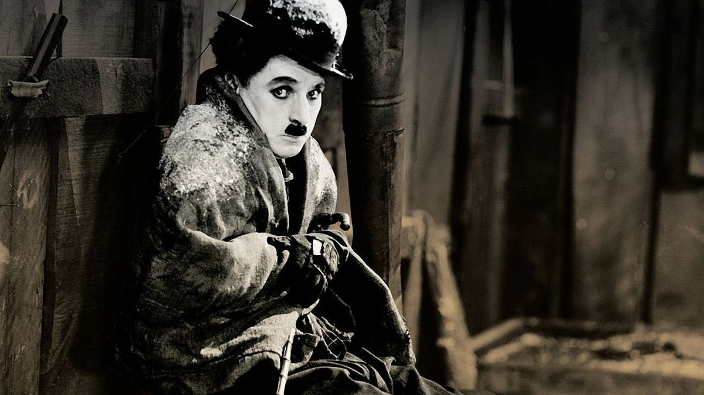
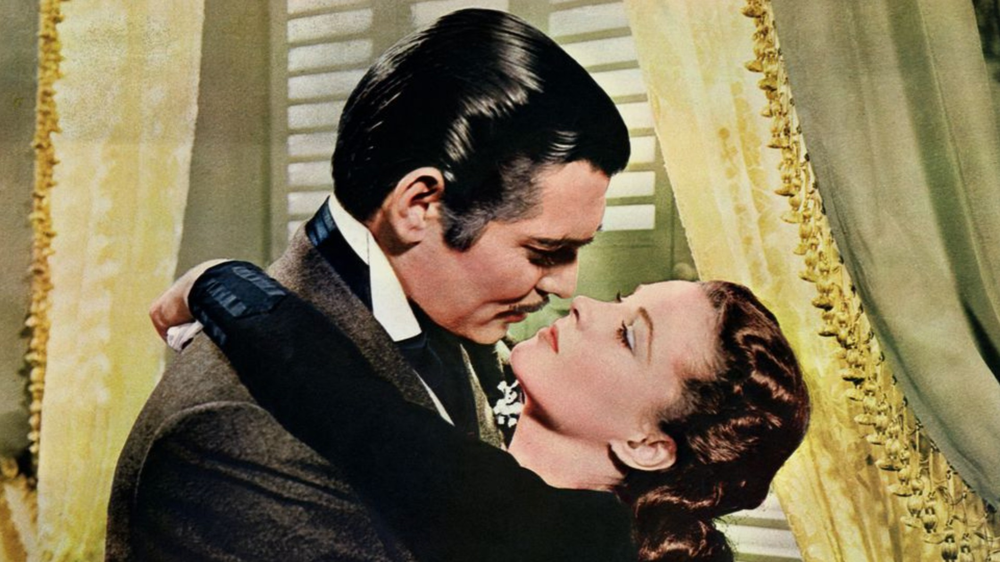
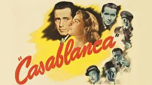
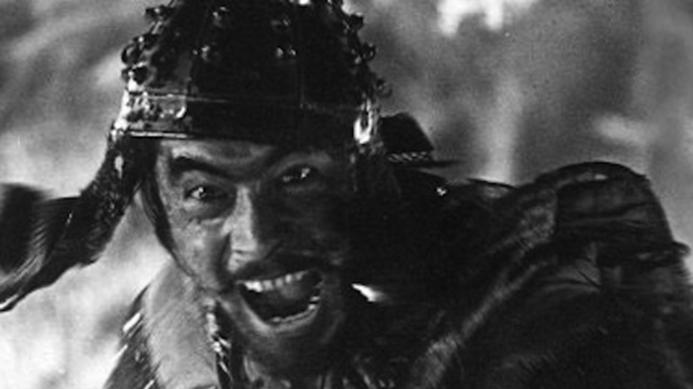
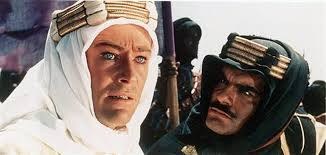
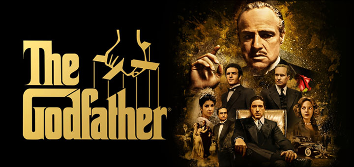
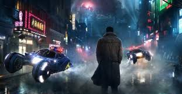
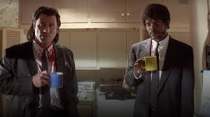
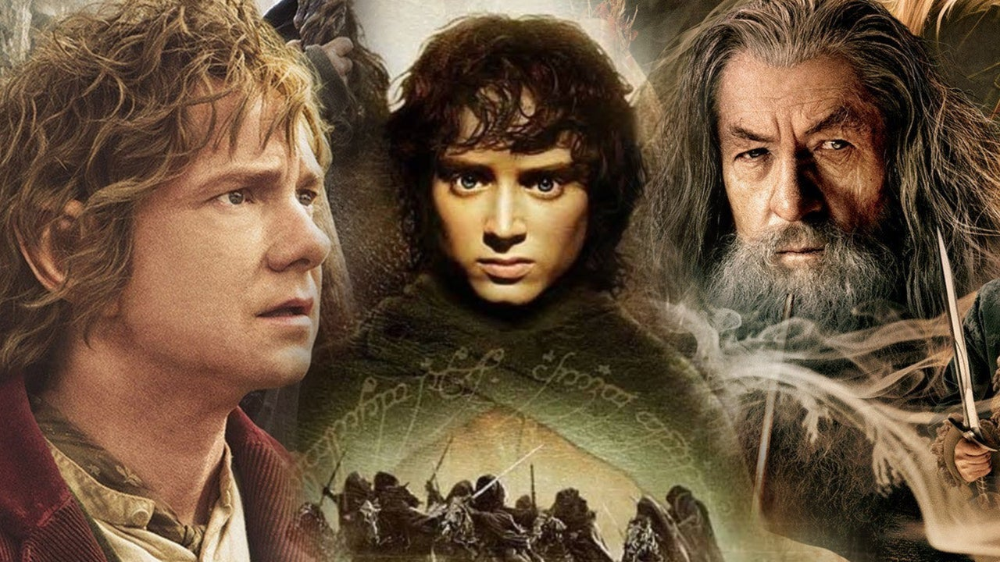
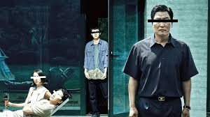

Cinema, a mirror reflecting society’s evolving psyche, has bestowed upon us countless masterpieces over the past century. From silent films to modern blockbusters, each decade has introduced groundbreaking works that have left indelible marks on the cultural landscape. This article explores the single best movie from each decade, starting in 1920 and journeying through to 2020s, celebrating the artistic and technological advancements that have shaped the film industry.
1920s: “The Gold Rush” (1925)

Introduction
The 1920s were a transformative period for cinema, marked by the transition from short films to feature-length productions and the rise of iconic silent film stars. Among the era’s many gems, Charlie Chaplin’s “The Gold Rush” stands out as a defining achievement.
Analysis
“The Gold Rush” is a silent comedy film that captures Chaplin’s genius as both an actor and a director. The film follows the misadventures of Chaplin’s beloved character, the Tramp, as he seeks fortune during the Klondike Gold Rush. Chaplin’s ability to blend humor with poignant social commentary, his masterful physical comedy, and the innovative use of special effects make this film a timeless classic. Key scenes, such as the Tramp eating his shoe or the cabin teetering on the edge of a cliff, showcase Chaplin’s unique style and enduring appeal.
1930s: “Gone with the Wind” (1939)

Introduction
The 1930s brought the advent of sound in films, ushering in a new era of storytelling and performance. Amidst the Great Depression, audiences sought escapism, and “Gone with the Wind” delivered it in epic proportions.
Analysis
“Gone with the Wind,” directed by Victor Fleming, is a monumental historical romance set during the American Civil War and Reconstruction era. The film, adapted from Margaret Mitchell’s novel, tells the story of Scarlett O’Hara (Vivien Leigh) and her turbulent love affair with Rhett Butler (Clark Gable). Its lavish production, sweeping narrative, and memorable performances, coupled with groundbreaking Technicolor cinematography, have cemented its place in cinematic history. The film’s exploration of themes such as love, loss, and survival against a backdrop of war and social upheaval resonates profoundly, even as it remains a subject of debate for its portrayal of slavery and racial issues.
1940s: “Casablanca” (1942)

Introduction
World War II cast a long shadow over the 1940s, and cinema often reflected the era’s complexities and struggles. Among the decade’s many standout films, “Casablanca” is celebrated for its timeless story and unforgettable characters.
Analysis
Directed by Michael Curtiz, “Casablanca” is a romantic drama set against the backdrop of war-torn Morocco. The film stars Humphrey Bogart as Rick Blaine, an American expatriate who runs a nightclub, and Ingrid Bergman as Ilsa Lund, his former lover. The narrative revolves around themes of love, sacrifice, and redemption, set amidst the chaos of war. Iconic lines like “Here’s looking at you, kid,” and “We’ll always have Paris,” along with the haunting melody of “As Time Goes By,” contribute to its enduring legacy. “Casablanca” captures the essence of wartime uncertainty and the complexities of human emotion, making it a timeless classic.
1950s: “Seven Samurai” (1954)

Introduction
The 1950s saw the rise of international cinema, with filmmakers from around the world gaining recognition for their innovative storytelling. Akira Kurosawa’s “Seven Samurai” is a seminal work from this period, influencing countless films and directors.
Analysis
“Seven Samurai” is an epic samurai drama that tells the story of a village’s desperate efforts to protect itself from bandits. The villagers hire seven samurai, led by the wise and noble Kambei (Takashi Shimura), to defend them. Kurosawa’s masterful direction, combined with his ability to blend action with deep character development, results in a film that is both thrilling and emotionally resonant. The film’s use of slow-motion, dynamic camera movements, and innovative editing techniques have left a lasting impact on the action genre. “Seven Samurai” is not just a tale of heroism; it’s a profound exploration of duty, honor, and sacrifice.
1960s: “Lawrence of Arabia” (1962)

Introduction
The 1960s were characterized by a wave of epic films that pushed the boundaries of cinematic storytelling. David Lean’s “Lawrence of Arabia” is a landmark achievement of this era, renowned for its grand scale and visual splendor.
Analysis
“Lawrence of Arabia” chronicles the life of T.E. Lawrence, a British officer who played a crucial role in the Arab Revolt during World War I. Peter O’Toole’s mesmerizing performance as Lawrence captures the complexity of a man torn between two worlds. The film’s breathtaking cinematography, particularly its sweeping desert landscapes, and Maurice Jarre’s iconic score, create an immersive viewing experience. David Lean’s meticulous direction and the film’s exploration of themes such as identity, colonialism, and heroism have made “Lawrence of Arabia” a timeless epic.
1970s: “The Godfather” (1972)

Introduction
The 1970s were a golden age for American cinema, with a new generation of filmmakers redefining the medium. Francis Ford Coppola’s “The Godfather” stands as a pinnacle of this era, offering a profound exploration of power and family.
Analysis
“The Godfather,” based on Mario Puzo’s novel, follows the Corleone crime family under the patriarch Vito Corleone (Marlon Brando) and his son Michael (Al Pacino). Coppola’s direction, combined with Puzo’s screenplay, creates a rich tapestry of characters and an intricate plot that delves into the dynamics of power, loyalty, and betrayal. The film’s iconic scenes, such as the opening wedding sequence and the climactic baptism montage, are masterclasses in storytelling and cinematic technique. “The Godfather” is not just a crime saga; it’s a profound meditation on the American Dream and the moral complexities of power.
1980s: “Blade Runner” (1982)

Introduction
The 1980s witnessed the rise of science fiction as a dominant genre in cinema. Ridley Scott’s “Blade Runner” is a quintessential example of the genre, blending noir aesthetics with futuristic themes.
Analysis
Set in a dystopian future, “Blade Runner” follows Rick Deckard (Harrison Ford), a blade runner tasked with hunting down rogue replicants—bioengineered beings. The film’s visual style, characterized by its dark, rain-soaked urban landscapes and intricate set designs, creates a hauntingly immersive world. Vangelis’ atmospheric score further enhances the film’s mood. “Blade Runner” explores profound themes such as identity, humanity, and the ethics of artificial life, raising questions that remain relevant in today’s technological age. Its influence can be seen in countless subsequent films, making it a cornerstone of science fiction cinema.
1990s: “Pulp Fiction” (1994)

Introduction
The 1990s marked a resurgence of independent filmmaking and a renewed focus on innovative storytelling. Quentin Tarantino’s “Pulp Fiction” exemplifies the decade’s creative spirit with its nonlinear narrative and eclectic style.
Analysis
“Pulp Fiction” is a crime drama that weaves together multiple interrelated stories featuring a diverse cast of characters, including hitmen Vincent Vega (John Travolta) and Jules Winnfield (Samuel L. Jackson), and mob wife Mia Wallace (Uma Thurman). Tarantino’s distinctive dialogue, combined with his penchant for blending dark humor with graphic violence, creates a unique cinematic experience. The film’s structure, which eschews chronological order in favor of a more fragmented approach, allows for a deeper exploration of its characters and themes. “Pulp Fiction” revitalized the indie film scene and cemented Tarantino’s reputation as a visionary filmmaker.
2000s: “The Lord of the Rings: The Return of the King” (2003)

Introduction
The 2000s were marked by advancements in digital technology and the rise of epic fantasy films. Peter Jackson’s “The Lord of the Rings: The Return of the King” is a monumental achievement in this context, completing an iconic trilogy.
Analysis
“The Return of the King,” the final installment of J.R.R. Tolkien’s epic saga, follows the climactic battle for Middle-earth. Jackson’s direction, combined with groundbreaking special effects, creates a visually stunning and emotionally powerful film. The ensemble cast, including Elijah Wood as Frodo and Ian McKellen as Gandalf, deliver compelling performances that bring Tolkien’s characters to life. The film’s epic scale, from massive battle scenes to intimate moments of friendship and sacrifice, captures the essence of Tolkien’s world. “The Return of the King” won 11 Academy Awards, including Best Picture, cementing its place in cinematic history.
2010s: “Inception” (2010)

Introduction
The 2010s saw a continued exploration of complex narratives and innovative storytelling techniques. Christopher Nolan’s “Inception” is a standout film of the decade, blending science fiction with psychological intrigue.
Analysis
“Inception” follows Dom Cobb (Leonardo DiCaprio), a thief who infiltrates the subconscious of his targets to steal secrets. The film’s central premise revolves around the concept of dream-sharing and the manipulation of reality. Nolan’s intricate plot, combined with stunning visual effects and Hans Zimmer’s mesmerizing score, creates a captivating and thought-provoking experience. The film’s exploration of themes such as memory, guilt, and the nature of reality challenges audiences to question their perceptionsof the world around them. “Inception” is a testament to Nolan’s ability to craft complex narratives that are both intellectually stimulating and visually spectacular, solidifying its status as a modern classic.
Don’t miss out on any updates and developments! Subscribe to the DATAIDEA Newsletter it’s easy and safe.
2020s: “Parasite” (2019)

Introduction
The early 2020s have been marked by a growing appreciation for international cinema, with films from around the globe gaining recognition and acclaim. Bong Joon-ho’s “Parasite” is a prime example of this trend, breaking barriers and winning prestigious awards.
Analysis
“Parasite” is a darkly comedic thriller that delves into themes of social inequality and class struggle. The film follows the Kim family as they scheme to become employed by the wealthy Park family, only to find themselves entangled in a series of unexpected events. Bong Joon-ho’s masterful direction and storytelling, combined with the film’s sharp social commentary, create a compelling and unpredictable narrative. The ensemble cast delivers outstanding performances, bringing depth and nuance to their characters. “Parasite” made history by becoming the first South Korean film to win the Palme d’Or at Cannes and the first non-English language film to win the Academy Award for Best Picture, highlighting the increasing global influence of diverse cinematic voices.